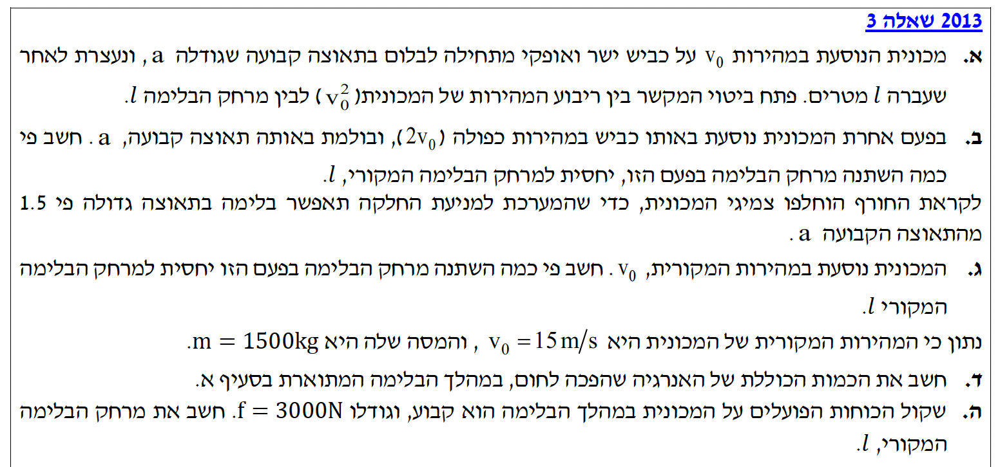

נושאים: קינמטיקה, דינמיקה, עבודה ואנרגיה

נשתמש במשוואת הקינמטיקה לתנועה שוות תאוצה (ללא זמן) מתוך דף הנוסחאות:
\( v^2 = v_0^2 + 2a(x - x_0) \)נציב את הנתונים שלנו לתוך המשוואה. נזכור כי ההעתק הוא \( \Delta x = (x - x_0) = l \), המהירות הסופית היא אפס, והתאוצה מנוגדת לציר לכן נציב \( -a \):
נעביר אגפים כדי לבודד את הביטוי המבוקש:
השלב הקריטי ביותר בפתרון בעיות קינמטיקה הוא הגדרת ציר הייחוס. המילה "תאוצה" בשאלה מציינת את הערך המוחלט (הגודל) של שינוי המהירות. מכיוון שגודל המהירות הולך וקטן עד לעצירה, אנו מסיקים שוקטור התאוצה מנוגד לכיוון המהירות. כיוון שבחרנו את כיוון התנועה כחיובי, התאוצה מקבלת סימן שלילי.
נשתמש באותה נוסחת קינמטיקה מסעיף א' ובביטוי שפיתחנו.
\( v^2 = v_0^2 + 2a\Delta x \)נציב את הנתונים החדשים במשוואה:
נסדר את המשוואה ונעלה בריבוע:
כעת, נציב במקום \( v_0^2 \) את הביטוי שמצאנו בסעיף א' שהוא \( v_0^2 = 2al \):
נצמצם את הגורם המשותף \( 2a \) משני עברי המשוואה:
שימו לב לקשר הפיזיקלי המרתק! מכיוון שהמהירות מופיעה בריבוע במשוואת האנרגיה או בקינמטיקה, הכפלת המהירות (פי 2) גורמת למרחק העצירה לגדול בריבוע (פי 4). זוהי הסיבה המדעית המדויקת מדוע נהיגה במהירות מופרזת מסוכנת כל כך - מרחק העצירה בחירום מתארך באופן קיצוני.
שוב נשתמש בנוסחת הקינמטיקה ללא זמן, ונעזר בביטוי מסעיף א'.
\( v^2 = v_0^2 + 2a\Delta x \)נציב את הנתונים במשוואה:
נעביר אגפים:
נציב במקום \( v_0^2 \) את הביטוי מסעיף א' (\( v_0^2 = 2al \)):
נחלק את שני האגפים ב- \( 3a \) כדי לבודד את \( l_2 \):
כאשר המהירות ההתחלתית קבועה, מרחק הבלימה נמצא ביחס הפוך לגודל התאוצה. ככל שהצמיגים "אוחזים" טוב יותר בכביש (כוח חיכוך גדול יותר גורר תאוצה גדולה יותר), המכונית תעצור במרחק קצר יותר. הכפלת התאוצה ב-1.5 (שזה בעצם להכפיל ב- \( \frac{3}{2} \)) גרמה להכפלת המרחק בהופכי שלו, כלומר ב- \( \frac{2}{3} \).
העיקרון הפיזיקלי כאן הוא משפט עבודה-אנרגיה. עבודת הכוחות הלא משמרים (במקרה שלנו, כוח החיכוך) שווה לשינוי באנרגיה המכנית הכוללת (בבעיה זו, שינוי באנרגיה הקינטית, כי הגובה לא משתנה). האנרגיה ש"אבדה" מן המערכת המכנית הפכה לאנרגיית חום.
\( E_k = \frac{1}{2}mv^2 \) \( W_{\text{nc}} = \Delta E \)נחשב תחילה את האנרגיה הקינטית של המכונית בתחילת הבלימה:
האנרגיה הקינטית בסוף הבלימה היא \( E_{k_f} = 0 \) (המכונית עצרה).
לפי משפט עבודה-אנרגיה, השינוי באנרגיה הקינטית שווה לעבודת כוח החיכוך:
עבודת החיכוך שלילית כי הכוח מנוגד לתנועה. העבודה השלילית הזו מציינת אנרגיה שהומרה מצורה מכנית (תנועה) לצורת אנרגיית חום בסביבה (בצמיגים ובכביש). ערכה של אנרגיית החום הוא הערך המוחלט של עבודת החיכוך.
חוק שימור האנרגיה הכללי בטבע קובע שאנרגיה לא יכולה להעלם. כשאנו אומרים שאנרגיה "אבדה" או שיש עבודה של "כוח לא משמר", הכוונה היא שהאנרגיה יצאה מהמאזן המכני (מהירות או גובה) אל צורות מיקרוסקופיות שקשה לנו לרתום מחדש, כמו חום. תמיד זכרו שכמות החום שנוצרה שווה בדיוק לאנרגיה המכנית שחסרה בסוף התהליך!
משפט עבודה-אנרגיה: עבודת הכוח השקול שווה לשינוי באנרגיה הקינטית של המכונית.
\( W = F \cdot \Delta x \cdot \cos\alpha \) \( W_{\Sigma F} = \Delta E_k \)על המכונית פועל כוח שקול יחיד בכיוון התנועה - כוח הבלימה \( f_k \), הפועל בניגוד לכיוון המהירות (\( \alpha = 180^\circ \)). עבודת כוח הבלימה תהיה:
את השינוי באנרגיה הקינטית מצאנו כבר בסעיף ד', שם חישבנו שהאנרגיה הקינטית ההתחלתית היא \( E_{k_0} = 168,750\text{ J} \) והאנרגיה הסופית היא \( 0 \). על פי משפט עבודה-אנרגיה נשווה את העבודה לשינוי באנרגיה הקינטית:
נחלץ את מרחק הבלימה \( l \):
בסעיף זה בחרנו להשתמש בשיקולי עבודה ואנרגיה כדי למצוא את המרחק, אך באותה מידה בדיוק יכולנו להשתמש בדינמיקה וקינמטיקה! יכולנו למצוא תחילה את תאוצת המכונית בעזרת החוק השני של ניוטון (\( \Sigma F = ma \)), לקבל שהתאוצה היא \( -2\text{ m/s}^2 \), ואז להציב אותה במשוואת הקינמטיקה שלמדנו (\( v^2 = v_0^2 + 2a\Delta x \)) כדי לחשב את המרחק. ברור שהתוצאה בשתי הדרכים יוצאת \( 56.25\text{ m} \), וזה היופי - הפיזיקה תמיד תהיה עקבית, ולא משנה באיזה "נתיב" תבחרו לפתור!